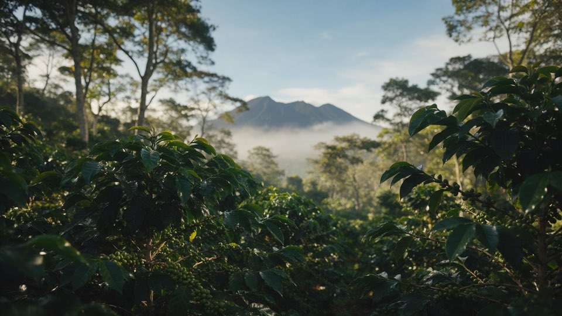
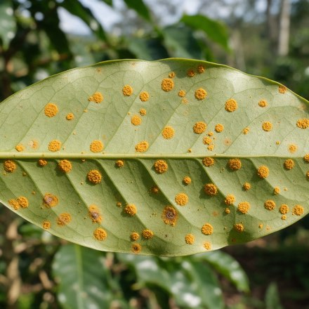
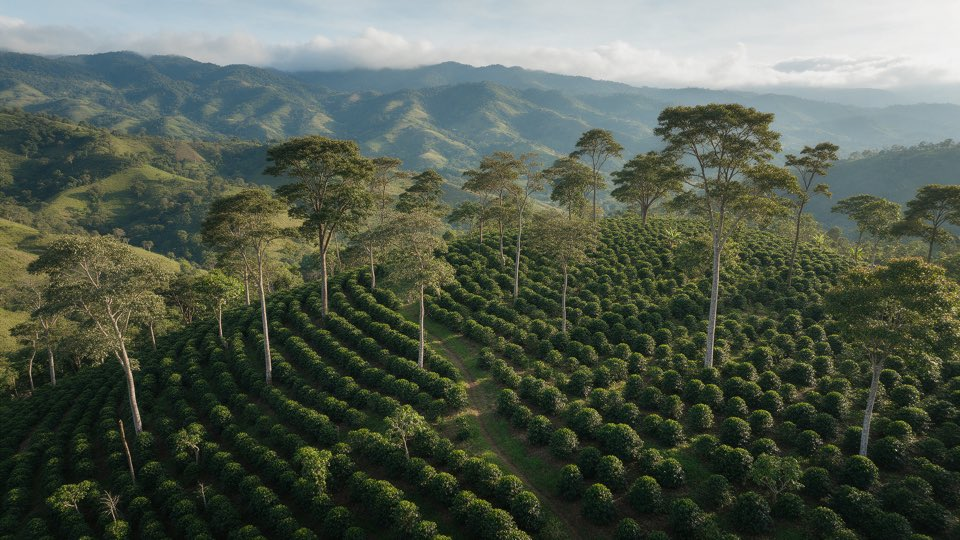

Calma
Índice 0 – 0.50
Las condiciones no dan para infección. No hay que gastar.

Clima para el agricultor
Sereno le avisa al caficultor, con días de anticipación, cuándo su parcela va a entrar en condiciones de infección de roya — para que aplique antes, no después.
Funciona en cualquier teléfono. Se instala desde el navegador y abre sin internet.
El problema
El caficultor revisa la hoja, encuentra las manchas anaranjadas en el envés y aplica fungicida ese mismo día. Llega tarde: esa infección ocurrió hace 25 a 30 días. Lo que aplica es dinero tirado.
Hoy tiene dos caminos y los dos le cuestan. Si fumiga por calendario, gasta de más la mitad del año. Si espera a ver el daño, ya lo tiene encima.
Y no es mala suerte. La infección ocurre cuando se juntan varias horas de hoja mojada dentro de un rango de temperatura. Eso se puede ver venir en el pronóstico, que es público y gratuito. Nadie se lo estaba traduciendo a una fecha y una acción.

La salida
«Del jueves al sábado se juntan las condiciones de infección en tu parcela. Aplicá antes del jueves. Si esperás a ver las manchas, ya perdiste.»
Una frase. Una fecha. Una acción. Lista para reenviar por WhatsApp.
En 30 segundos
Grabado contra la aplicación que está corriendo en producción, con datos de clima reales. No es una maqueta. En teléfono se reproduce el montaje vertical; en pantalla ancha, el horizontal.
Cómo funciona
Un punto en el mapa y cinco datos: altura, cultivo, variedad, área y si ya vio síntomas.
El pronóstico de los próximos 16 días para ese punto exacto, no para el municipio.
Y las compara con las que la literatura científica exige para que la roya infecte a esa temperatura.
La ventana de riesgo y el último día para aplicar. Con el porqué, para que no tenga que creer a ciegas.
La lectura
Nunca solo color: el aviso tiene que entenderse en una captura de pantalla reenviada por WhatsApp, y también por quien no distingue bien los tonos.
Índice 0 – 0.50
Las condiciones no dan para infección. No hay que gastar.
Índice 0.50 – 0.75
Se está acercando. Conviene tener el producto listo y mirar el pronóstico.
Índice 0.75 – 1
Las condiciones se juntan. Aplicar antes de que empiece la ventana.
Por qué creerle
El riesgo sale de un modelo publicado: Magarey, Sutton & Thayer (2005), Phytopathology 95(1):92-100. Umbrales explícitos sobre series de clima por hora.
La inteligencia artificial no calcula el riesgo. Si acaso redacta el aviso en español llano. Si eso falla, el número sigue siendo correcto.
En la misma pantalla: cuántas horas de hoja mojada se juntaron, cuántas pedía el modelo a esa temperatura, y de qué fuente salió el clima y a qué hora.
Sin estación meteorológica propia y sin cuota. Por eso lo puede usar un productor de dos hectáreas y no solo una finca con agrónomo.
Lo que Sereno no hace

Pruébelo con la coordenada de su parcela. No pide tarjeta ni instalación.
Abrir Sereno